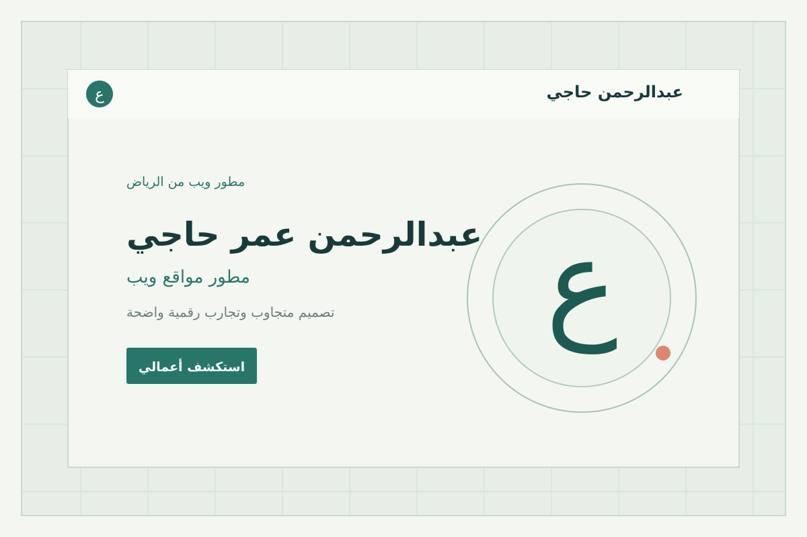
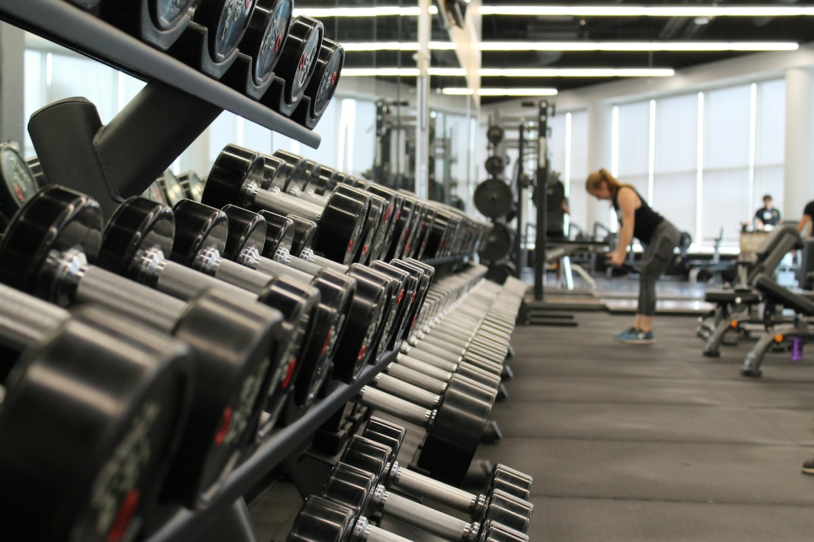

عرض تقديمي.
ستة مشاريع رقمية، لكلٍّ منها فكرته وهويته وتجربته الخاصة.
ستة مجالات،
ست تجارب مختلفة.
اضغط على بطاقة أي مشروع لفتح موقعه مباشرة في نافذة جديدة، أو تنقّل بين الشرائح لمشاهدة تفاصيله.
رعاية لطيفة،
وابتسامة تدوم.
تجربة هادئة لعيادات الأسنان في الرياض، تعرّف بالخدمات وتسهّل الوصول إلى معلومات الرعاية.

تليق بك
مسيرة مهنية،
في مكان واحد.
سيرة ذاتية رقمية لمطور مواقع، تقدّم المهارات والمشاريع والتعليم والتواصل ضمن واجهة شخصية منظمة.

ومهارات
لحظات هادئة،
وقهوة تحبها.
موقع مقهى في الرياض يحتفي بالوقت على مهل، ويجمع قائمة المشروبات وأجواء المكان ومعلومات التواصل.

على مهل
قوّتك،
على طريقتك.
موقع مركز لياقة في الرياض يقدّم مساحة مشجعة للتعرّف على التدريب والخدمات والتجهيزات.

بلس
صيانة واضحة،
وقيادة مطمئنة.
موقع مركز صيانة في جدة يشرح ما تحتاجه السيارة قبل البدء، ويعرض الخدمات وطرق التواصل بوضوح.

وعناية
رؤية قانونية واضحة،
وخطوات مدروسة.
موقع مكتب محاماة واستشارات قانونية في الرياض؛ يعرّف بالخدمات للأفراد والشركات ويقدّم المعلومات بسرية ووضوح.

والثقة
شكرًا لاهتمامكم.
عبدالرحمن عمر حاجي
تصميم وتطوير المواقع الإلكترونية